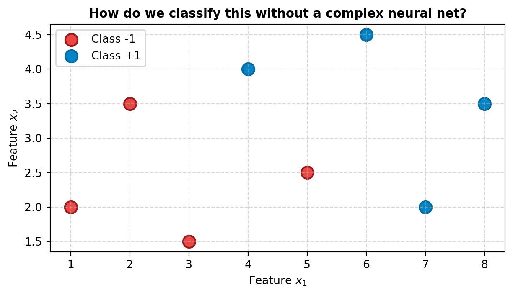
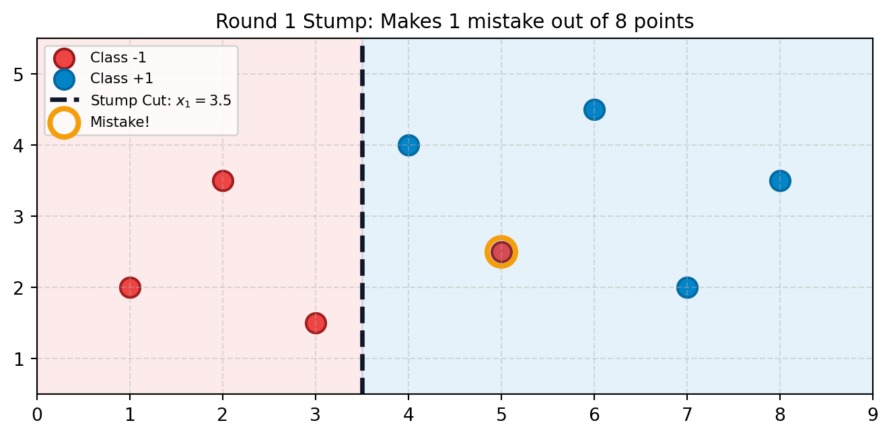
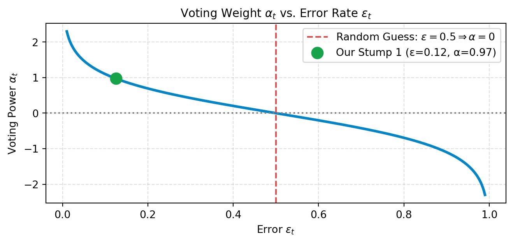
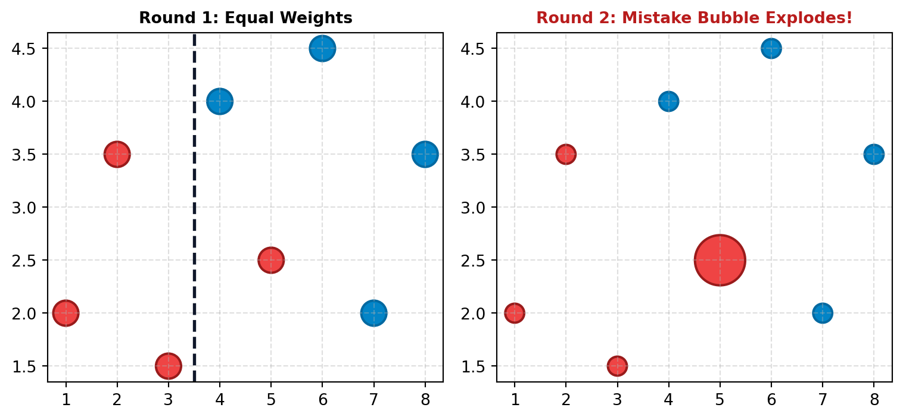
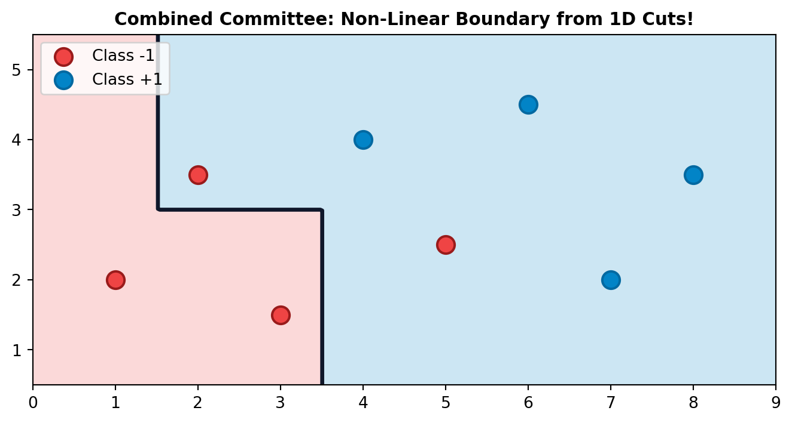
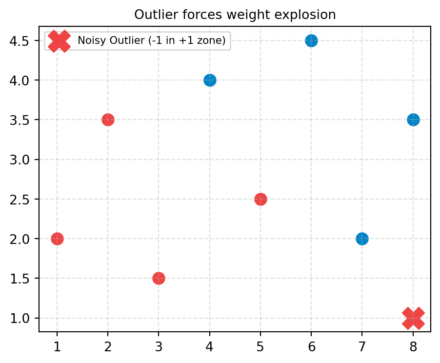

Turning Weak Stumps into an Unstoppable Committee
A single straight line cannot separate this dataset.

Instead of building a deep, complicated model, AdaBoost strings together the simplest classifier possible.
A Decision Stump is a tree with depth = 1: one feature, one threshold cut.
\[h(x) = \text{polarity} \times \text{sign}(x_j - \theta)\]

Every data point starts with equal importance:
\[w_i^{(1)} = \frac{1}{N} = \frac{1}{8} = 0.125\]
Sample weights array: [0.125 0.125 0.125 0.125 0.125 0.125 0.125 0.125]Intuition
No data instance is special on day 1. Special attention is earned only when a learner gets it wrong.
The error of stump \(h_t\) is the sum of weights of the points it got wrong:
\[\epsilon_t = \sum_{i: y_i \neq h_t(x_i)} w_i^{(t)}\]
Indices misclassified: [4]
Weighted error epsilon_1: 0.125Condition: As long as \(\epsilon_t < 0.5\), this learner beats a random guess.
How much authority does Stump \(t\) get in the final committee vote?
\[\alpha_t = \frac{1}{2} \ln\left( \frac{1 - \epsilon_t}{\epsilon_t} \right)\]

Samples that were misclassified have their weights boosted:
\[w_i^{(t+1)} = \frac{w_i^{(t)} \exp\left(-\alpha_t y_i h_t(x_i)\right)}{Z_t}\]

Point 5 misclassified \(\Rightarrow\) its weight jumps from \(0.125 \to 0.467\)!
Here is the exact NumPy code that fits subsequent rounds:
class SimpleStump:
def __init__(self, feat, thresh, polarity):
self.feat, self.thresh, self.polarity = feat, thresh, polarity
def predict(self, X):
return np.where(self.polarity * (X[:, self.feat] - self.thresh) >= 0, 1, -1)
# Fit Round 2 and Round 3 manually to illustrate
stump2 = SimpleStump(feat=1, thresh=3.0, polarity=1)
preds2 = stump2.predict(X)
eps2 = np.sum(w_next[preds2 != y])
alpha2 = 0.5 * np.log((1 - eps2) / max(eps2, 1e-10))
print(f"Stump 2 Error on new weights: {eps2:.3f}")
print(f"Stump 2 Voting Power Alpha: {alpha2:.3f}")Stump 2 Error on new weights: 0.143
Stump 2 Voting Power Alpha: 0.896Every stump votes with weight \(\alpha_t\). The sign gives the final prediction:
\[H(x) = \text{sign}\left( \sum_{t=1}^T \alpha_t h_t(x) \right)\]

What happens if we add one mislabeled outlier into the corner of the dataset?
Because the sample weight formula is exponential: \[w \propto \exp(\alpha)\]
AdaBoost will multiply the outlier’s weight endlessly until the entire committee becomes obsessed with fitting noise!
